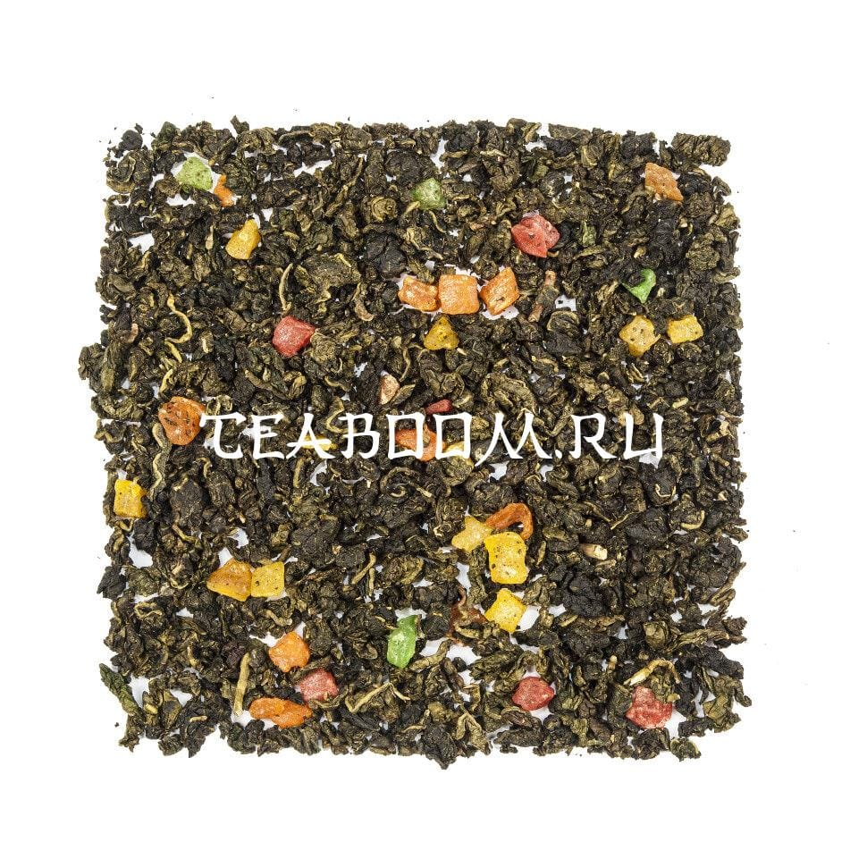

Ананасовый улун

О чае
Светлый фуцзяньский улун с ароматом ананаса. В сухом виде — крупный лист изумрудного цвета, скруткой напоминающий Те Гуань Инь. В прогретой посуде раскрывается аромат свежей весенней зелени и спелого ананаса.
- Заваривание
- 1–3 мин
- Температура воды
- 80–85 °C
- На 500 мл
- 2 ч. л.
- Происхождение
- Китай, Фуцзянь
Вкус
Настой прозрачный, светло-янтарного цвета. Классическая нота светлого фуцзяньского улуна переплетается с яркой ананасовой нотой.
Состав: китайский бирюзовый чай, цукаты, натуральные ароматические масла.